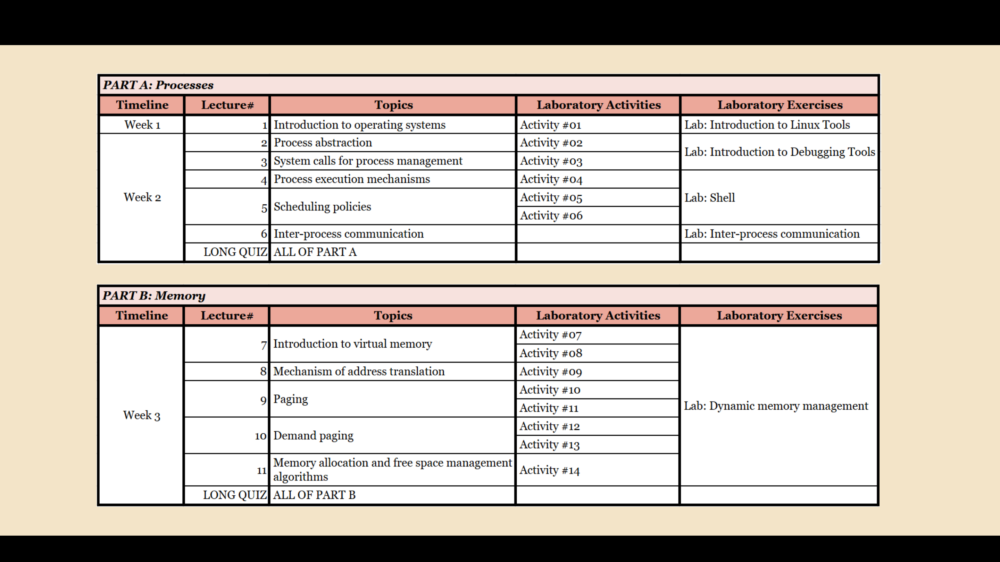
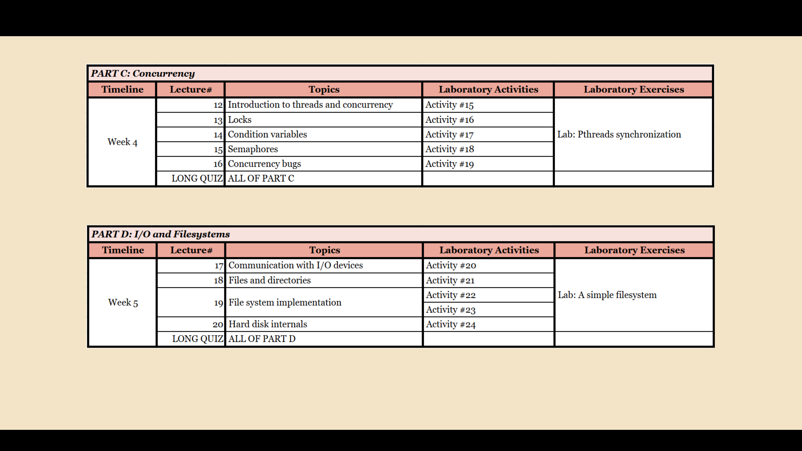
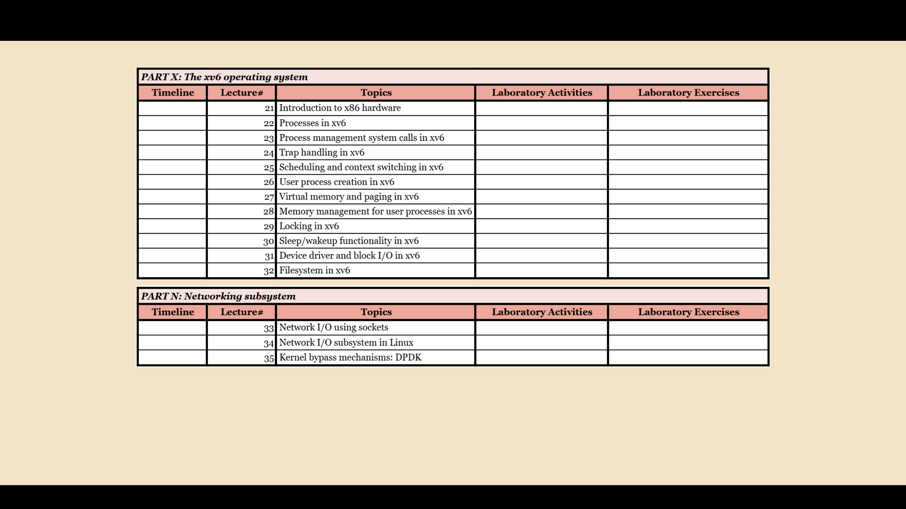
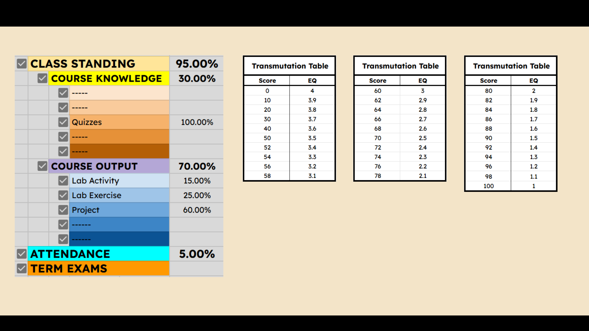
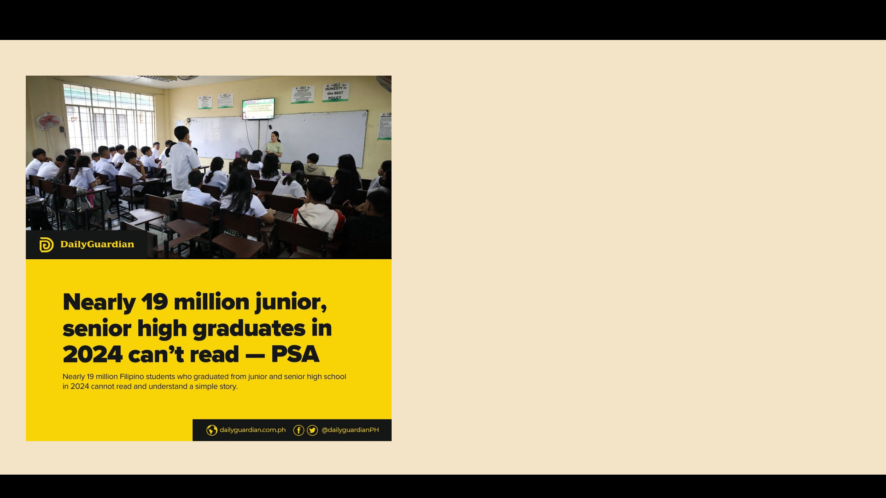
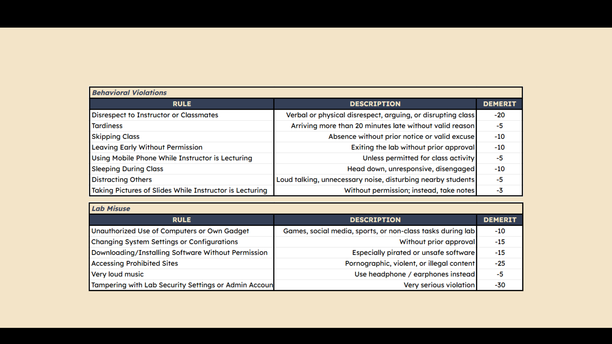
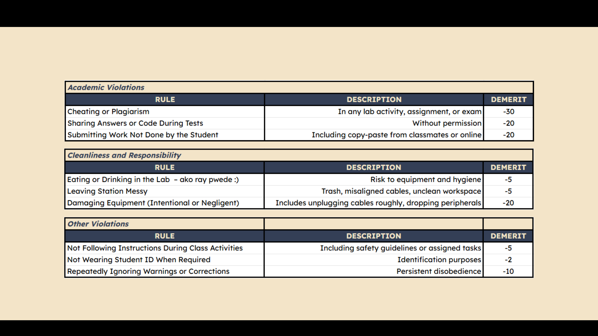

FIRST
MEETING
ORIENTATION
| University of San Jose - Recoletos | School of Computer Studies
| Operating Systems | Engr. Violdan E. Bayocot
ENGR. VIOLDAN E. BAYOCOT
UNIVERSITY OF SAN JOSE - RECOLETOS

OPERATING
SYSTEMS
WHAT IS THIS COURSE ABOUT?
ENGR. VIOLDAN E. BAYOCOT
UNIVERSITY OF SAN JOSE - RECOLETOS

• There will be more hands-on laboratory activities and exercises.
• We’re aiming for at least 20 lectures—
possibly more.
• No major exams. (might change)
Why?
Because it’s a summer semester, and we don’t have enough time for
multiple lectures and multiple quizzes.
This means the course will be output-based.
WHAT TO EXPECT
ENGR. VIOLDAN E. BAYOCOT
UNIVERSITY OF SAN JOSE - RECOLETOS

COURSE SCHEDULE / TIMELINE
ENGR. VIOLDAN E. BAYOCOT
UNIVERSITY OF SAN JOSE - RECOLETOS

COURSE SCHEDULE / TIMELINE
ENGR. VIOLDAN E. BAYOCOT
UNIVERSITY OF SAN JOSE - RECOLETOS

We won’t have enough time to cover Part X and Part N during this summer semester.
If this were a regular semester, we would absolutely dive into these sections to give you a deeper understanding of the full scope of Operating Systems.
If you’re interested in exploring further after the course, I strongly recommend continuing your study starting with these topics.
COURSE SCHEDULE / TIMELINE
ENGR. VIOLDAN E. BAYOCOT
UNIVERSITY OF SAN JOSE - RECOLETOS

EXTRA CREDIT
Optional extra credit work will be available during the semester. Completing this
can earn you up to +10 additional points toward your final grade. Participation is
entirely optional and up to you.
NO REMOVAL EXAM
Please note that there will be no removal exam for the summer semester.
Any final grade between 3.1 and 4.0 will be considered FAILED.
GRADING SYSTEM
ENGR. VIOLDAN E. BAYOCOT
UNIVERSITY OF SAN JOSE - RECOLETOS

It is your responsibility to manage your time and ensure your work is submitted
correctly and on time.
Submissions must be on or before the deadline.
Late submissions are accepted, but will receive a 10% deduction per day late.
Deadline extensions may be granted, but are at the instructor’s discretion.
Requests should be made before the deadline whenever possible.
SUBMISSION GUIDELINES
ENGR. VIOLDAN E. BAYOCOT
UNIVERSITY OF SAN JOSE - RECOLETOS

That is not just a number—it reflects a national challenge in
comprehension, communication, and critical thinking
And yes, I believe the previous years of education were
affected by this reality—which probably includes YOU.
But here’s the thing:
I will treat you as adults.
I believe in your ability to think, to grow and to rise above
expectation—if you choose to.
A MESSAGE FROM YOUR INSTRUCTOR
ENGR. VIOLDAN E. BAYOCOT
UNIVERSITY OF SAN JOSE - RECOLETOS
You might’ve heard from others that I’m a chill instructor.
That’s true—but last semester and the semesters before that, I was also observing,
learning how students respond, how they work, and how they treat learning.
I’ll still be approachable, I’ll still listen.
This semester, things will change.
But I’ll also be firmer in upholding the standards and the rules we’ll set together.
Because if we want real growth, real output, and real understanding—we can’t afford to
stay in bare minimum mode.
ABOUT MY TEACHING APPROACH
ENGR. VIOLDAN E. BAYOCOT
UNIVERSITY OF SAN JOSE - RECOLETOS
This institution holds a set of values we’re meant to embody. They aren’t just words;
they’re standards for action.
I expect you to commit to our INSPIRE…D? core values. Starting here and now.
• I – INTERIORITY
• N – NATIONALISM
• S – SERVICE
• P – PIONEERISM
• I – INTEGRITY
• R – RELIABILITY
• E – EXCELLENCE
• …
• D – DISCIPLINED
WHAT I EXPECT FROM YOU
ENGR. VIOLDAN E. BAYOCOT
UNIVERSITY OF SAN JOSE - RECOLETOS

Each student starts with 100 points. A student with 60
points or fewer may be dropped from the class
Note:
This list of violations and corresponding demerit points is not exhaustive. There may be additional rules or updates introduced as necessary throughout the semester.
Students will be notified of any changes in a timely manner. It is your responsibility to stay informed and comply with all classroom and laboratory expectations.
COMPUTER LABORATORY DEMERIT SYSTEM
ENGR. VIOLDAN E. BAYOCOT
UNIVERSITY OF SAN JOSE - RECOLETOS

Note:
This list of violations and corresponding demerit points is not exhaustive. There may be additional rules or updates introduced as necessary throughout the semester.
Students will be notified of any changes in a timely manner. It is your responsibility to stay informed and comply with all classroom and laboratory expectations.
Each student starts with 100 points. A student with 60
points or fewer may be dropped from the class
COMPUTER LABORATORY DEMERIT SYSTEM
ENGR. VIOLDAN E. BAYOCOT
UNIVERSITY OF SAN JOSE - RECOLETOS
SCHOOL OF COMPUTER STUDIES
ENGR. VIOLDAN E. BAYOCOT
“and Welcome to Operating Systems"
UNIVERSITY OF SAN JOSE - RECOLETOS
THANK YOU!